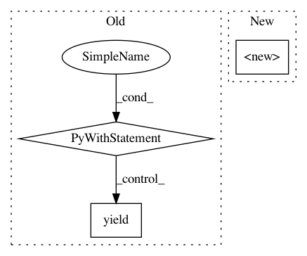

3b77f6b6c38fea6616cae10ca8e0c3a20782934a,tests/python/pants_test/backend/jvm/subsystems/test_custom_scala.py,CustomScalaTest,scala_platform_setup,#CustomScalaTest#,64
Before Change
"suffix_version": "2.10",
}
}
with subsystem_instance(ScalaPlatform, **options):
self.make_target("//:scalastyle",
JarLibrary,
jars=[JarDependency("org.scalastyle", "scalastyle_2.10", "0.3.2")]
)
self.make_target("//:scala-repl",
JarLibrary,
jars=[
JarDependency(org = "org.scala-lang",
name = "jline",
rev = "2.10.5"),
JarDependency(org = "org.scala-lang",
name = "scala-compiler",
rev = "2.10.5")])
self.make_target("//:scalac",
JarLibrary,
jars=[JarDependency("org.scala-lang", "scala-compiler", "2.10.5")])
yield
def test_custom_lib_spec(self):
with self.scala_platform_setup():
self.make_target("//:scala-library",
JarLibrary,
After Change
def scala_platform_setup(self):
options = {
ScalaPlatform.options_scope: {
"version": "custom",
"suffix_version": "2.10",
}
In pattern: SUPERPATTERN
Frequency: 3
Non-data size: 3
Instances
Project Name: pantsbuild/pants
Commit Name: 3b77f6b6c38fea6616cae10ca8e0c3a20782934a
Time: 2016-09-12
Author: benjyw@gmail.com
File Name: tests/python/pants_test/backend/jvm/subsystems/test_custom_scala.py
Class Name: CustomScalaTest
Method Name: scala_platform_setup
Project Name: pantsbuild/pants
Commit Name: 3b77f6b6c38fea6616cae10ca8e0c3a20782934a
Time: 2016-09-12
Author: benjyw@gmail.com
File Name: tests/python/pants_test/backend/jvm/subsystems/test_jar_dependency_management.py
Class Name: JarDependencyManagementTest
Method Name: _jar_dependency_management
Project Name: pantsbuild/pants
Commit Name: 3b77f6b6c38fea6616cae10ca8e0c3a20782934a
Time: 2016-09-12
Author: benjyw@gmail.com
File Name: tests/python/pants_test/backend/jvm/tasks/test_scalastyle.py
Class Name: ScalastyleTest
Method Name: custom_scala_platform_setup